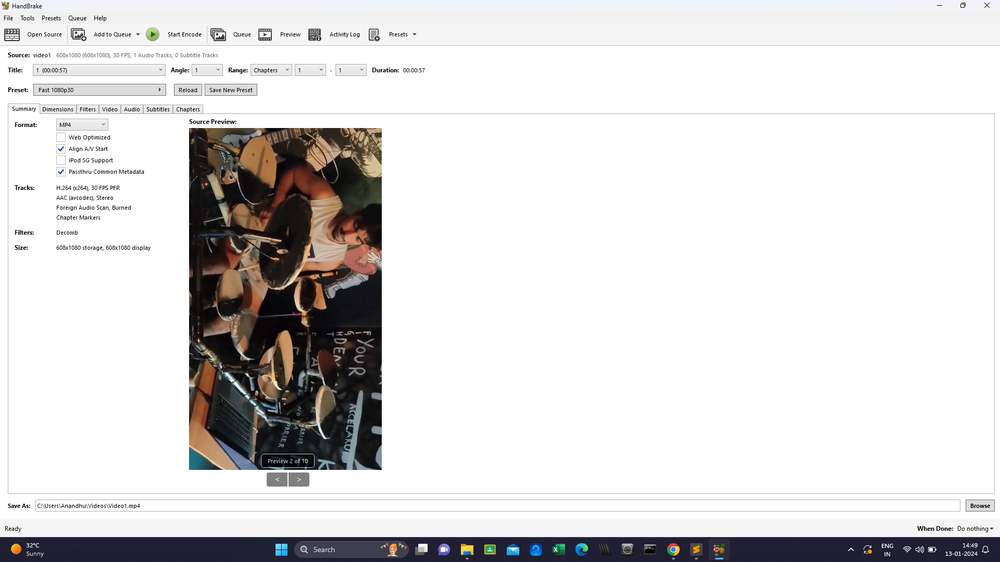
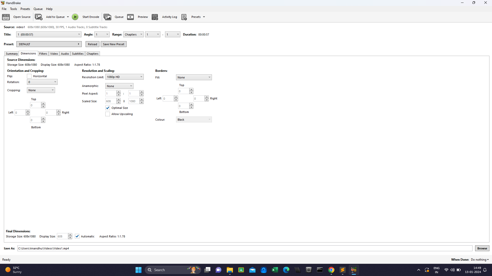
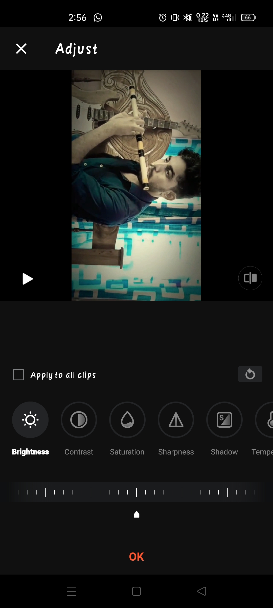
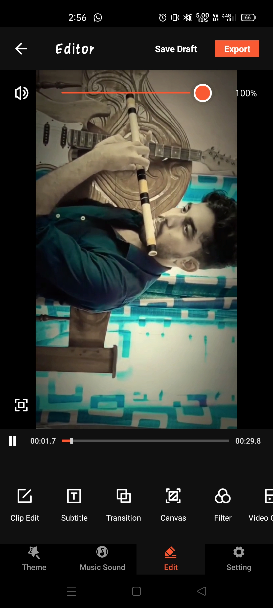
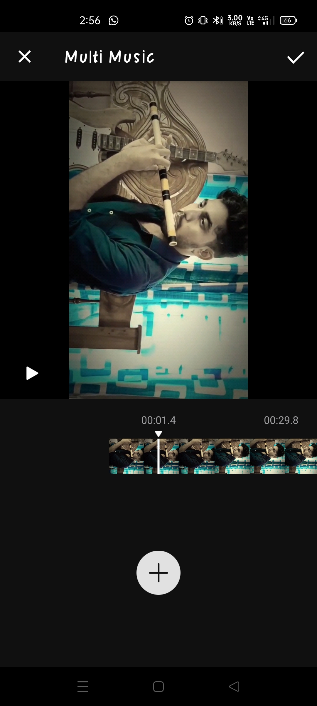
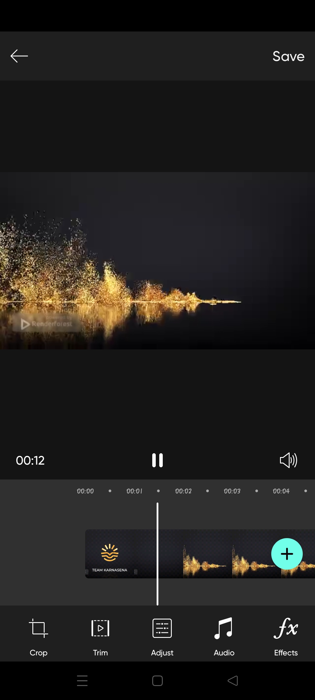
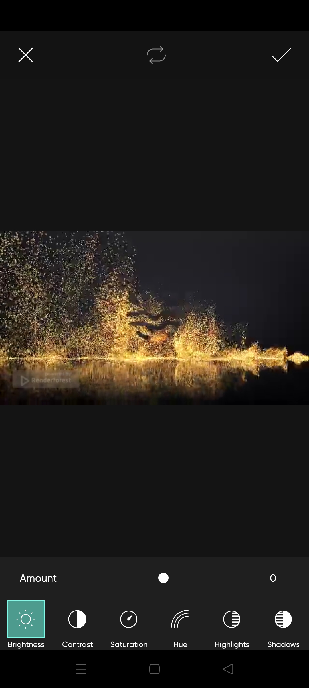
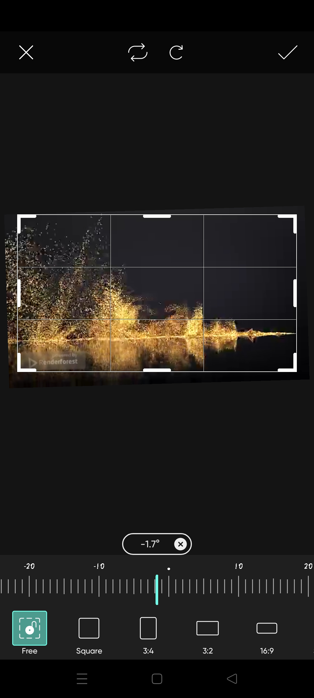

During high school, my initiation into video editing was for basic purposes like creating trolls, crafting intro videos, making slideshows, and altering background music. However, as I delved into playing musical instruments, my editing endeavors took a more serious turn.
I began incorporating intricate edits such as precision voice merging, compression without quality loss, light and color adjustments, trimming, cropping, and various transition effects. To facilitate these advanced edits, I started utilizing tools like VideoShow, Handbrake, and PicsArt.
Scroll down for more images
double click on image to view in fullscreen








